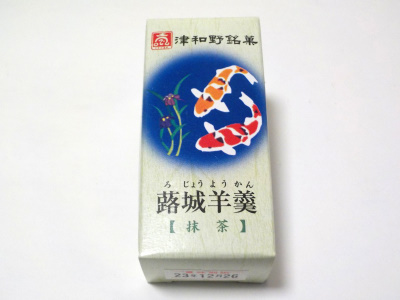
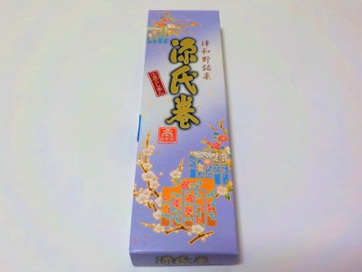

沙羅の木の蕗城羊羹【抹茶】
2023/12/24

ちょっと大き目の一口羊羹です。
小さいものだとそのままパクっといただけますが、この大きさだったらお皿に入れて味わって食べた方がいいなと思いました。
羊羹は柔らかかったです。でもしっかりと味があり、満足感がありました。
島根県鹿足郡津和野町殿町
2023/12/24

ちょっと大き目の一口羊羹です。
小さいものだとそのままパクっといただけますが、この大きさだったらお皿に入れて味わって食べた方がいいなと思いました。
羊羹は柔らかかったです。でもしっかりと味があり、満足感がありました。
2022/02/23

津和野名物の源氏巻ですが、津和野に行かず近くのスーパーで買いました。
近くで買えるのって楽でいいなーって思うんですけど、ちょっと有難味がなくなりますね。
この源氏巻は塩味がちょっと強めだなって思いました。源氏巻ってこんな味だったっけ？
津和野に行って食べ比べしてみたいと思いました。イベントが復活したら行きたいです。